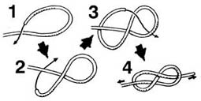

基本绳结 Basic Knots
八字结（Figure of Eight Knot）
广为人知的八字结一如其名，打好后的结会呈现“8”的形状，主要用于防滑。
当绳子比较粗的时候，将绳端先行交叉，绳头绕过主绳穿过绳圈后拉紧完成；
当绳子比较细的时候，将绳端对折，把对折部份转两圈，绳头穿过绳圈，拉紧完成。
即使两端拉得很紧，依然可以轻松解开
平结（Reef Knot）
平结也被称为方结、平接结。完成后形状扁平，故得此名。
平结若没系紧，便会松开，或是系得紧，而难解开，
所以平结很少用来连结两条绳索，而是用于连结不需解开的同一条绳索的两头。
连接两条绳索时，仅适用于同样粗细和质材的绳索，且两条绳索的拉力必须均等。
接绳结（Sheet Bend）
接绳结是一种用于连接两条粗细及材质不同的绳索的结。是最古老的一种结。
它的特点是打法简单，结实可靠，而且十分容易拆解。
可以用来连接材质、粗细不同的绳索。常用于连接船缆等。
——仅作个人交流用途——